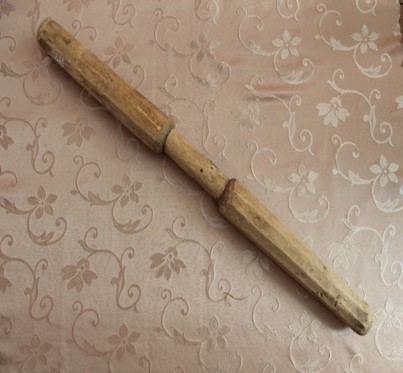

Галоўная
Катэгорыі
Прылады працы – 50
Пытанне:
Драўляная прылада працы, зробленая з легкай, моцнай і доўгай драўніны. Выкарыстоўвалася ў хатняй гаспадарцы для змяльчэння чаго-небудзь.

Адказ:
Таўкач
Узнать ответ